CHAPTER 8 : AEM Replication and Reverse Replication
Replication facilitates the transmission of content from an author to a publish AEM instance.
The AEM Author instance is typically hosted on port 4502, serving as an internal server primarily intended for content authoring. The content is then published or transferred to multiple AEM instances through content replication, also known as activation.
Multiple publish AEM instances can be configured to accommodate the content replication process.
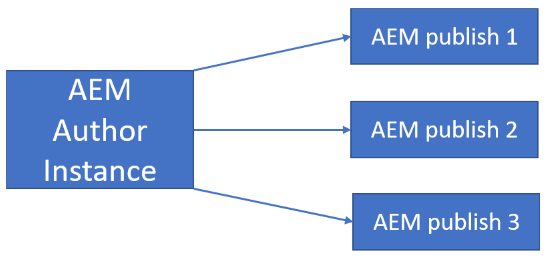
-
Replication Agent
A replication agent is a configuration that facilitates the publishing of content from an author to a publish instance. It is necessary to create replication agents for each publish instance.
Follow the steps below to create a replication agent:
- Navigate to the following URL and select the Configuration tile: 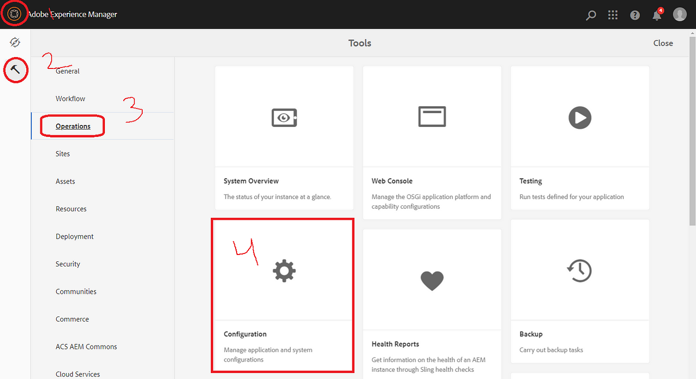
- Navigate to the Replication option, where you will find the Agents on Author and Agents on Publish sections. 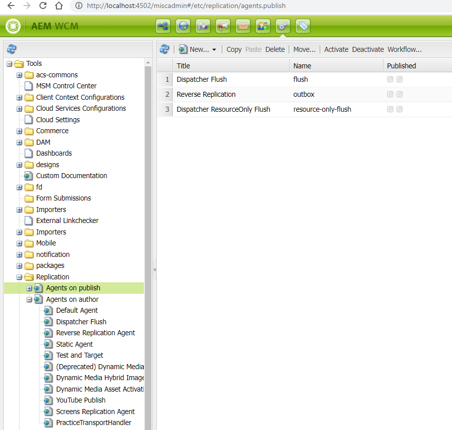
- Choose the Agents on Author option, and click on "New" to create a new page, as highlighted in red below. 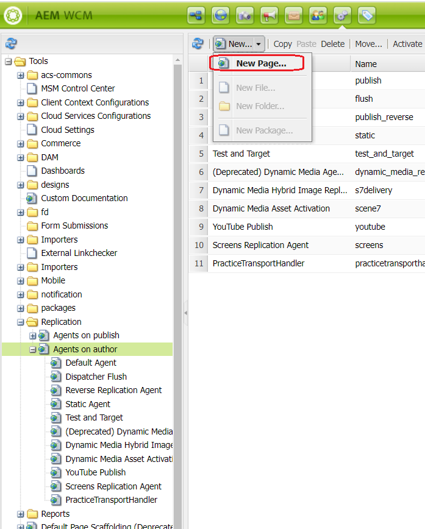
- Choose the Replication Agent option, provide the necessary custom title, and click on the create button. 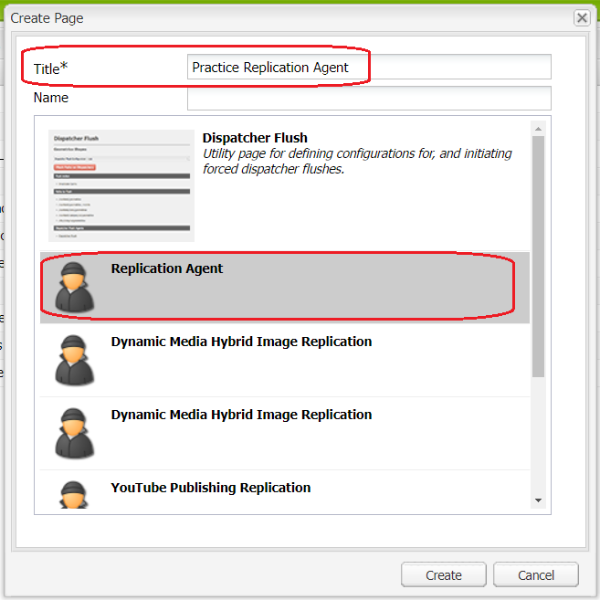
- Select the created Replication Agent and click on the "Open" option. 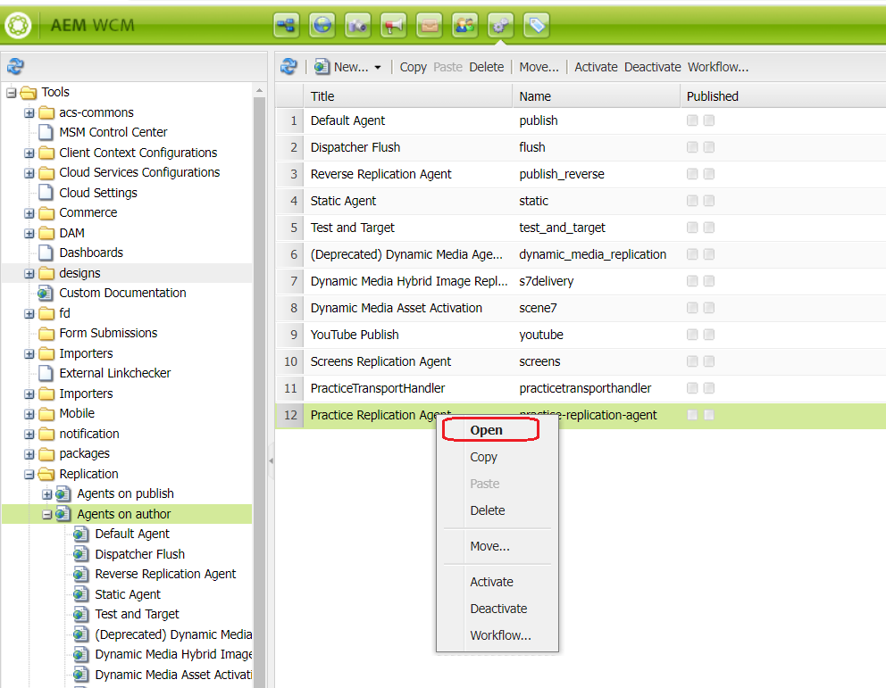
- Enable the replication agent by checking the "Enabled" checkbox. 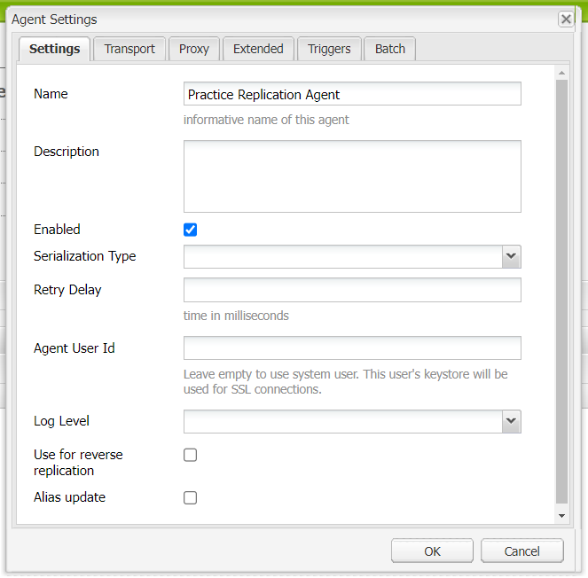
- Navigate to the Transport tab and enter the URI as :
https://
:4503/bin/receive?sling:authRequestLogin=1. For a local setup, it will be https://localhost:4503/bin/receive?sling:authRequestLogin=1.
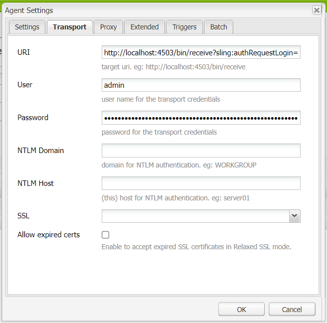
Fill in the username and password.
Click the OK button to save the changes. - Clicking on "Test Connection" will verify the connection between the author and the publish instances. 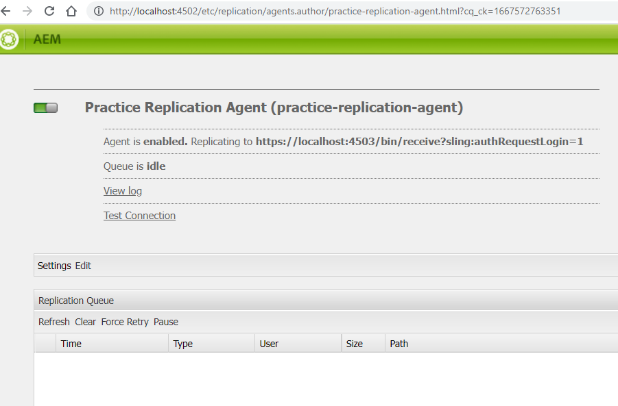
- The successful connection between the author and publish instance will be indicated by the highlighted output below. 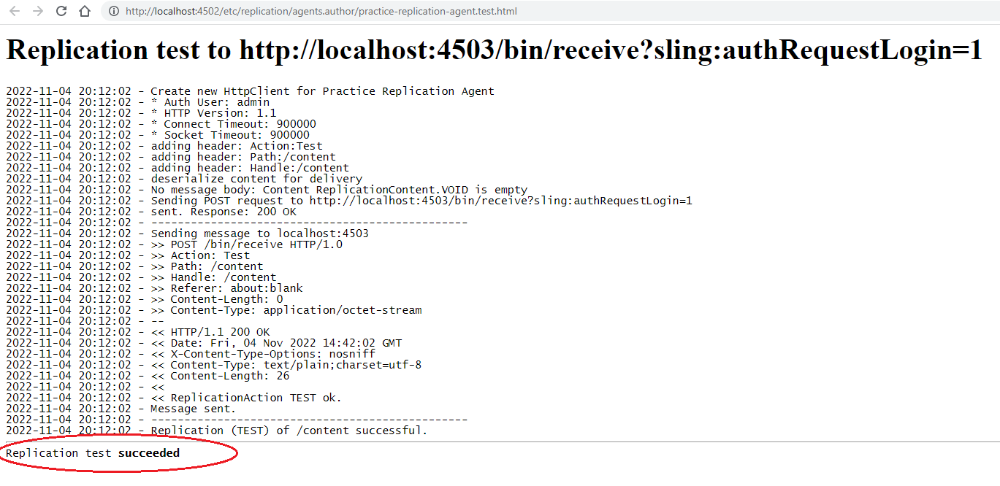
-
Replication Using Custom API
Utilize the com.day.cq.replication API for publishing or replicating a resource.
Follow the steps below for custom resource replication:- 1. Use the @Reference annotation to consume the Replicator OSGI service:
java
@Reference
Replicator replicator; - The replicate() method from the Replicator interface enables the publishing of content or a resource. Provide the session, replication type, and the content, asset, or resource path:
java
replicator.replicate(session, "Activate", resource_path);
- 1. Use the @Reference annotation to consume the Replicator OSGI service:
java
-
Reverse Replication
AEM Publish instances are typically hosted on port 4503 and are accessible to end users.
As part of reverse replication, content is replicated or transferred from the publish instance to the author. 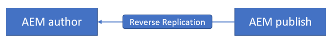By default, only cq:Page is suitable for reverse replication. For other nodes, custom code is required.
To trigger reverse replication upon any content change, incorporate cq:lastModified, cq:lastModifiedBy, and cq:distribute properties as part of an event to activate the reverse replication agent.
During activation, ensure to clear the cq:lastModified, cq:lastModifiedBy, and cq:distribute properties to prevent an infinite loop. -
Reverse Replication Agent :
Follow all the steps outlined in the Replication Agent section above, except for the 4th step.
In the 4th step, select the Reverse Replication Agent and provide the title as shown below.